把设备管理变成连续的工作区
新的信息架构、清晰的数据密度，以及可实际走通的设备、告警、升级和治理流程。此稿供审核，尚未替换正式三端系统。
打开交互原型 →设备注册 → 上报；规则创建 → 告警解决；OTA 批次 → 失败重试；邀请成员 → 权限验证。所有数据和操作都是本地模拟，不连接真实设备或发送消息。
真实浏览器截图
截图用于说明本稿运行态，不代表视觉基线或用户验收已批准。

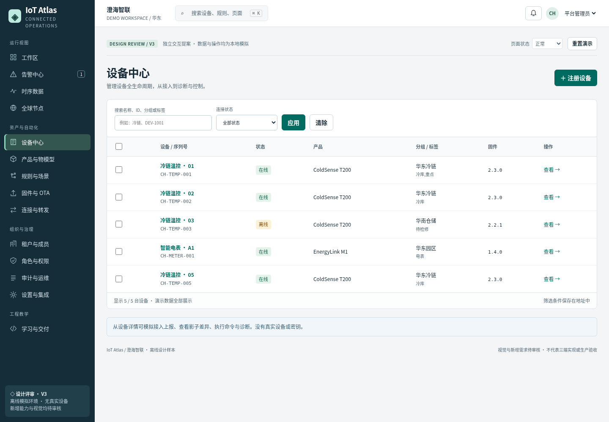
桌面 · 设备工作区点击查看原始截图
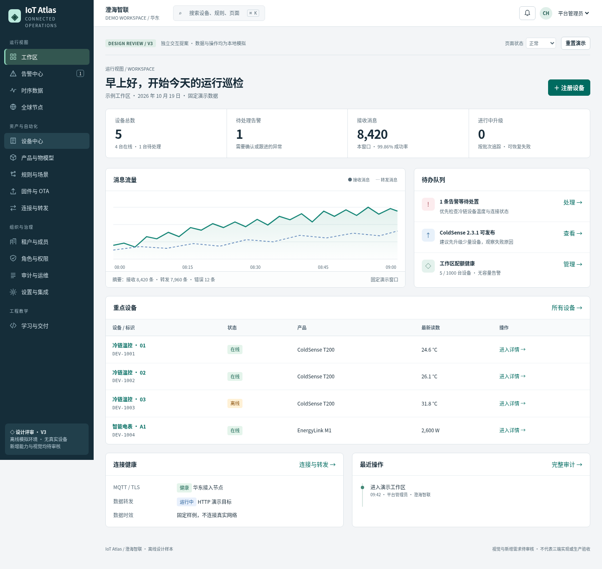
桌面 · 运行工作区点击查看原始截图
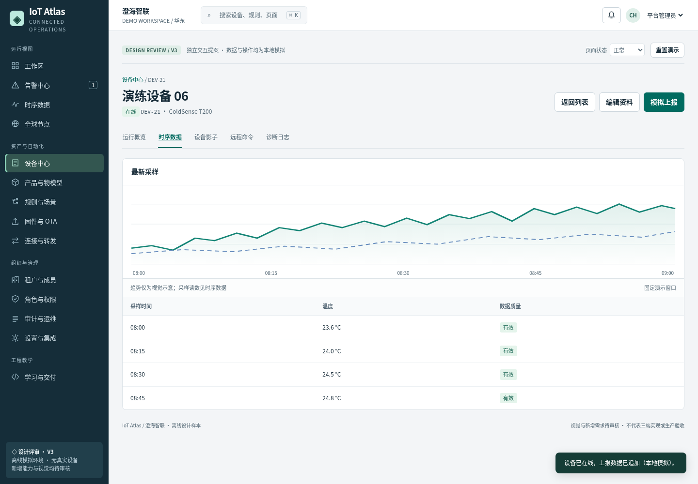
设备接入后的时序数据点击查看原始截图
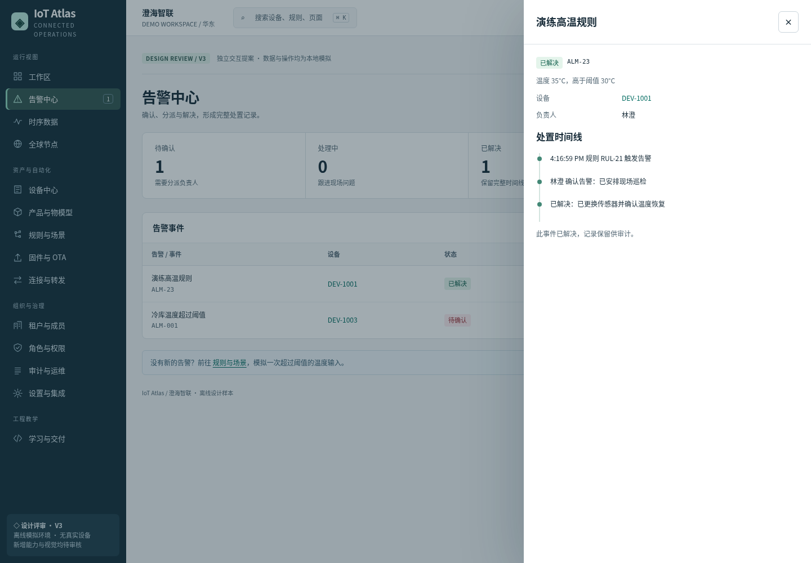
告警处置与时间线点击查看原始截图
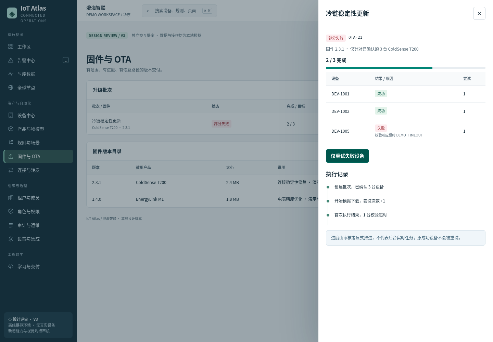
OTA 部分失败与恢复入口点击查看原始截图
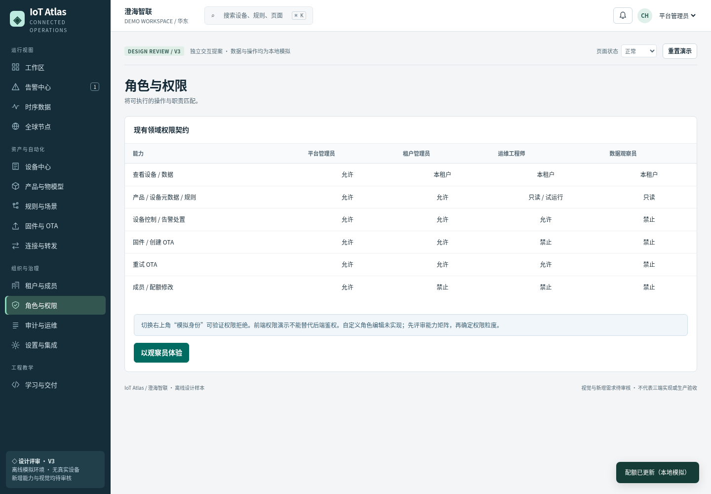
角色权限矩阵点击查看原始截图
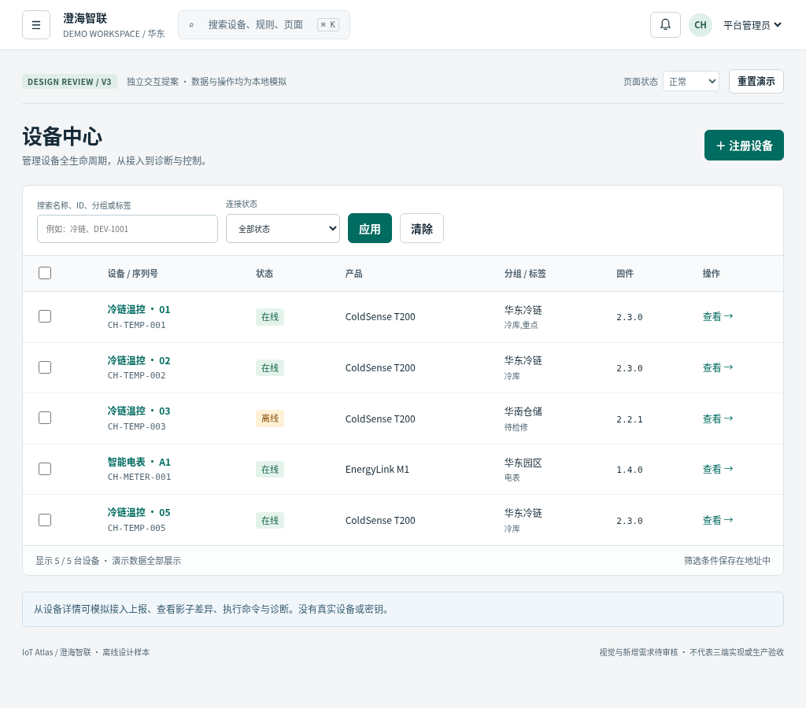
平板 · 设备工作区点击查看原始截图
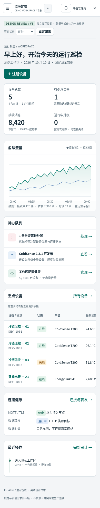
手机 · 运行工作区点击查看原始截图
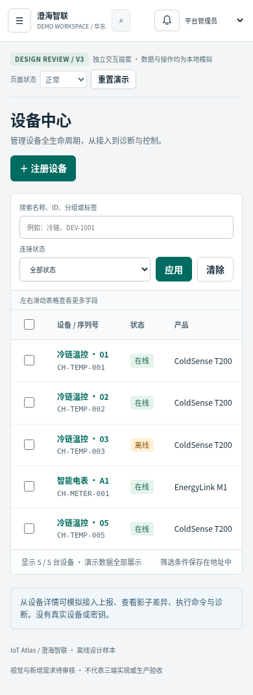
手机 · 设备列表点击查看原始截图
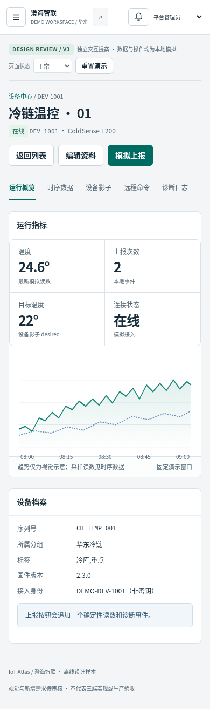
手机 · 设备详情点击查看原始截图
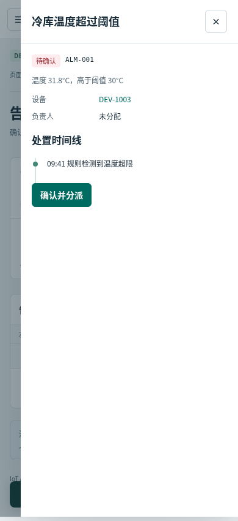
手机 · 告警处置抽屉点击查看原始截图完整设计与范围
IoT Atlas · 工作区 V3 设计评审稿
状态：待用户审核。2026-10-19。此稿独立于正式应用，不替换 V2 已批准基线，不构成生产交付、视觉批准或最终验收。
参考仓库：wswanking/frontend-framework-learning-hub，基线 b20bd23cff8941dfac93a2fc7cb7017edae58ccc。正式三端、依赖、Mock 与测试未改动。本目录为离线设计样本。
设计主张
将云管理系统组织为操作者的连续工作区。首页回答“哪里需要我处理”；设备表回答“对象是谁、处于什么状态”；详情承载诊断与操作。产品、规则、发布、组织治理各自保持固定工作位置。主要任务不必在大盘与多个工具页间跳转。
采用浅灰画布、白色表格与深墨色导航。青绿色只表达主操作和当前导航，红色只表达风险。页面顶部维持上下文、搜索、通知与身份；桌面左栏常驻，平板和手机为可关闭导航。信息优先用紧凑指标条、表格、时间线、右侧详情呈现。避免巨型 KPI 卡片、装饰地图、过多渐变与留白。
设计系统（本次提案）
• 侧栏 224px；顶栏 64px；主区边距 28px，手机 16px；8px 基础间距，4px 用于紧凑组合。
• 字体：系统中文无衬线；正文 14px / 1.55，标签 12px，页标题 26px；数字表格等宽，文本默认左对齐。
• 颜色：画布 #f3f5f7、正文 #172b38、次正文 #536774、主色 #006b60、错误 #a83232。颜色同时配文字标签，不单独编码状态。
• 表格：44–52px 行高、固定表头、横向滚动只发生在表格容器；长 ID 可折行。主名称链接进详情，次要操作在该行末尾。批量操作仅在勾选后出现，并显示数量与影响。
• 筛选：输入作为草稿；“应用”提交 URL 查询；清除回到完整集合。路由保存对象、页签和已应用查询；页面草稿不无限缓存。
• 表单：标题说明任务；字段标签常显，必填/单位明确；原生约束错误定位输入；业务错误保留草稿。提交反馈进入 live region。
• 详情：对象主任务为完整页面；低风险查看为右侧抽屉；确认与创建用对话框。对话框焦点进入、Tab 圈定、Escape 退出、退出回到触发点。
• 高风险操作：确认目标、数量、不可恢复影响及执行身份；批量删除需输入 DELETE。OTA 重试需原因，且只重试失败设备。
• 反馈：顶部轻量状态提示、表格就地空/错/加载/无权限；通知链接到处理对象。所有成功均标记为本地模拟。
• 响应式：<=1050px 收起桌面侧栏；<=680px 栏目单列，表格保留字段可横滑；主要创建/处理操作仍可键盘与触屏触发。无 hover 专属操作。
相较 V2 / 当前应用
| 当前依据 | 提案变化 | 目的 / 审核点 |
|---|---|---|
| 大盘、地图、产品、设备等九入口 | 保留原业务域，分为运行、资产、自动化、治理、学习；补独立告警/连接器/审计入口 | 信息架构待批准，避免将治理混入操作主线 |
| 以模块演示及图表为主 | 首页聚合待办，告警与 OTA 可直接进入处置 | 评估真实运维任务优先级 |
| 列表→详情抽屉→详情页 | 常用设备页直接完整详情；轻量对象使用侧抽屉 | 减少多层容器；保留返回筛选和焦点 |
| 租户成员配额 | 加入角色权限矩阵与邀请模拟 | 现行 tenantAdmin 只能查看治理；是否允许管理需单独批准，原型不擅自放宽 |
| 本地 Mock 原型 | 确定性可推进模拟事件，失败与恢复可复现 | 演示进度不冒充后台任务 |
| 已有明暗主题 | 本稿先确认浅色密集工作区；暗色列入后续 | 未交付暗色，不可据此移除原产品需求 |
覆盖矩阵
“可操作”仅指本设计原型中的浏览器模拟；不是正式三端能力完成。C=本稿核心；A=进阶设计/局部交互；O=本轮不实现。新增编号 V3-PROP-* 都是待审核建议，不占用正式 IOT 编号。
| 范围 / 对应现有需求 | 层级 | 原型页面与交互 | 状态 / 边界 |
|---|---|---|---|
| 工作区 / IOT-DASH-001 | C | 待办、指标、设备趋势、全局搜索、通知跳转 | 加载/空/错误/403 可切换；数据摘要 |
| 全球节点 | A | 节点表、地域健康、节点详情 | 表格代替装饰地图；地理图层待设计 |
| 产品 / 物模型 | C | 产品列表、属性规格查看、新增属性、类型与单位 | 版本发布/DP 转换为进阶，不伪装实现 |
| 设备 / IOT-DEVICE-001 | C | 注册、筛选、分组/标签、详情、删除、返回焦点 | 模拟身份标识不是真实密钥；离线态明确 |
| 设备影子 / 命令 / 日志 | C | desired/reported 差异、模拟同步、命令确认、诊断日志 | 不向真实设备发命令；完整命令超时状态机为进阶 |
| 时序查询 | C | 设备选择、时间窗口、点表/趋势、CSV 导出 | 固定温控演示数据；电表仅只读规格样例，无大规模存储或实时订阅 |
| 规则 / V3-PROP-01 场景联动 | C/A | 阈值规则创建、启停、模拟输入、触发告警；场景步骤查看 | 可视 DAG/多条件/定时场景编辑为进阶 |
| V3-PROP-02 告警生命周期 | C | 新建→确认→解决，负责人/处理说明、时间线 | 合并/抑制/升级策略为进阶 |
| 固件 / OTA | C | 版本目录、新建批次、推进进度、部分失败、仅重试失败 | 签名验证、灰度策略、取消在途任务为进阶；无真实固件 |
| 租户 / 成员 / 配额 | C | 示例租户、成员邀请、角色分配、配额校验 | 仅 platformAdmin 修改，与现有契约一致 |
| V3-PROP-03 RBAC | C | 角色矩阵、切换身份、路由/操作拒绝 | 前端模拟非安全边界，后端鉴权本轮外 |
| V3-PROP-04 协议/连接器/转发 | A | MQTT/HTTP 连接器状态、测试连接、转发目的查看 | 无外部网络调用、无凭据输入 |
| V3-PROP-05 审计 / 运维 | C/A | 原型操作写入审计、过滤、健康摘要 | 不可篡改审计、监控告警后端本轮外 |
| 设置 / 集成 | A | 本地通知偏好可保存；集成能力与边界查看 | 通知/邮件/Webhook 外发本轮外 |
| 框架实验室 / 交付 | A | 对应实现路线、交付检查门槛 | 不标记教学、CI 或发布已完成 |
| 计费、真实认证、生产部署、边缘计算、视频/数字孪生 | O | 在范围说明中列出 | 不作为“功能全覆盖”已实现主张 |
四条审核演练
1. 设备接入：设备→注册设备→填名称/序列号→保存并进入详情→模拟上报→状态由待接入变在线，时序和日志出现事件→返回设备列表。
2. 告警处置：规则→创建温度阈值规则→模拟温度大于阈值→告警新增→确认并指定负责人→填写解决原因→解决；审计出现动作。
3. OTA 恢复：OTA→创建批次（固件、范围）→确认目标→推进模拟，出现部分失败→查看失败原因→填写重试原因→仅重试失败项→推进完成；原成功项次数不增加。
4. 治理：租户与成员→邀请模拟成员→分配运维角色→查看权限矩阵→切换观察员→禁止写入；恢复平台管理员→修改配额，低于用量时拒绝。
附加演练：修改设备名未保存时切路由、后退及关闭；取消保留输入，放弃才退出；刷新走浏览器原生保护。全局搜索含无结果。未知路由提供恢复。状态选择器属于评审工具，不是生产设置。
后续三端落地映射（仅设计）
| 责任 | React | Vue | Angular |
|---|---|---|---|
| 持久壳 / 路由 | React Router 父布局 / Outlet | RouterView + route meta | ShellComponent + RouterOutlet |
| URL 查询 / 详情页签 | searchParams | route query / computed | queryParamMap / signals |
| 表单与未保存 | 页面 hook + blocker | composable + leave/update guard | Reactive Forms + CanDeactivate |
| 操作状态 / 失效 | 本端 request hook，AbortController | 本端 composable，onScopeDispose | 本端 service，RxJS 取消 |
| 表格 / 对话框 | MUI | Element Plus | Angular Material |
| 确定性模拟 / 权限 | 本端领域与 Mock | 本端领域与 Mock | 本端领域与 Mock |
| 验证 | 本端 unit/Playwright | 本端 unit/Playwright | 本端 unit/Playwright |
只共享文档契约和人工审核规则，不共享运行时代码、设计令牌包、Mock、资源、依赖或测试源码。原型中的通用渲染器只用于评审，不作为第四个运行时依赖。正式开发先重新确认状态模型与 API，再按相同验收脚本分别惯用实现。壳层持有身份、导航；页面持有筛选草稿和请求；URL 持有位置；模拟仓库存已保存业务状态；离开页面不缓存无限实例。
请审核的决策
1. 是否接受浅色密集工作区、分组导航与完整设备详情？暗色仍是后续需求。
2. 是否批准告警、连接器、审计、RBAC 的新页面进入正式 PRD？优先告警闭环，连接器保持模拟。
3. 是否维持现有权限矩阵（仅平台管理员管理成员配额）？如调整需要新权限契约与独立测试。
4. 四条主流程是否符合教学项目的业务复杂度？先实现核心，再做进阶，避免一次铺满全部 IoT 领域。
5. 本轮不部署。可以交付离线包；如需私有在线预览，须另行确定访问范围、平台与发布授权。
在收到明确审核意见前，不替换 V2、不改正式三端、不批准视觉基线、不合并/部署。
独立复核后的覆盖澄清
本稿有 14 个导航模块，另有设备详情页及抽屉/表单状态，不等于 14 个完整业务系统。四条核心闭环针对 ColdSense T200 温控设备与示例租户；EnergyLink M1 仅展示电量/功率规格样例与元数据编辑，不支持温控、时序、影子、命令或 OTA。图表是标明的趋势视觉示意，查询与 CSV 使用固定采样数据；不是完整时序分析器。正式版需要产品特定状态模型、图表坐标/单位与异步请求契约。
验证事实
设计原型验证说明
本记录仅针对独立 V3 设计原型，不代表正式三端完成。测试于 2026-10-19 执行，修正稿于 2026-10-21 整理到本目录。视觉与新增需求仍待用户审核。
| 检查 | 结果 |
|---|---|
| 核心与边界浏览器检查 | 11 组通过，0 失败，1 项受阻 |
| 新增独立复核回归 | 通过：14 模块 × 4 异常状态恢复、CSV 已应用查询一致性、同页搜索关闭、电表正确规格 |
| 手机布局 | 14 个模块在 390×844 下无页面级横向溢出 |
| 无障碍自动扫描 | 桌面、注册弹窗、手机导航与 14 个手机页面，最终零违规 |
| 原型语法与单文件生成 | 通过 |
| 离线导航 | HTTP 加载后断网仍可切换；无外部请求 |
| 截图 | 11 张真实 Chromium 截图，含桌面、平板、手机 |
环境：Linux、Chromium 154.0.8037.57、Playwright 1.63.0、axe-core 4.13.0。详细结果见「验证记录」目录。
已覆盖
• 注册、重复序列号校验、上报、时序、筛选 URL、详情深链与返回焦点。
• 规则触发告警、确认分派、解决原因与审计。
• OTA 范围确认、部分失败、仅失败项重试；成功项不增加尝试次数。
• 成员与配额校验、观察员拒绝写入、受限页面不展示数据。
• 未保存离开确认、后退/前进、刷新保护、取消保留草稿。
• 批量删除确认、物模型属性、影子、命令、CSV、通知偏好。
• 模态与移动导航的键盘焦点、未知路由恢复、加载/空/错/无权限状态。
独立只读复核
审阅者实际查看关键桌面/手机截图并操作核心流程，发现并修正：设备异常态脚本异常、CSV 使用未提交的筛选草稿、电表误套温控字段。另补手机横滑提示，修正同页搜索关闭、无效清除按钮及桌面菜单样式。所有相关回归通过。主要布局层级与密度清晰，但独立复核不替代用户审核。
受阻与未运行
• 环境浏览器策略拒绝 file:// 打开，返回 ERR_BLOCKED_BY_ADMINISTRATOR；未绕过。请使用 README 的本地 HTTP 方式。
• 未测试 Safari、Firefox、iOS 真机、人工读屏、高倍率缩放、暗色主题或生产性能。
• 保存为同步本地模拟；输入校验失败保留草稿，不包含完整服务器保存失败及自动重试策略。
• 没有真实 API、鉴权、MQTT、固件服务或外部通知。
• 本稿未修改三端实现，因此本轮没有将三端旧 CI 结果计作本设计验收，也未运行三端生产构建或视觉基线比较。